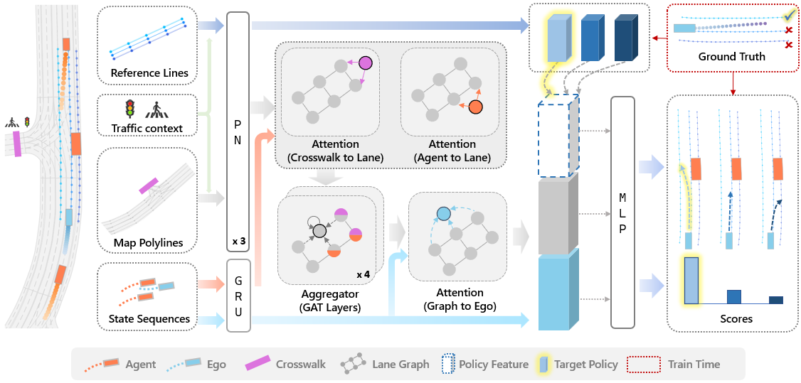

MPNP: Multi-Policy Neural Planner for Urban Driving
Hong Kong University of Science and Technology, RAM-LAB
Abstract & Method
Our goal is to train a neural planner that can capture the diverse driving behaviors in complex urban scenarios. We observe that even state-of-the-art neural planners are struggling to perform common maneuvers such as lane-change, which is rather natural for human drivers. We propose to explore the multi-modalities in the planning problem and force the neural planner to explicitly consider different policies. This is achieved by generating the future trajectories conditioned on every possible reference line, which could simply be the centerline of the surrounding lanes. We find this simple strategy yet enables the planner to perform rich and complex behaviors. We train our model using real-world driving data and demonstrate the effectiveness of our method through both open-loop and closed-loop evaluations.
